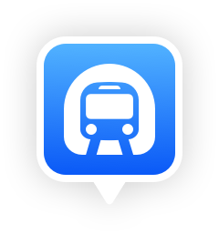

<html>
<head>
    <meta charset="utf-8">
    <!--重要meta, 必须!-->
    <meta content="width=device-width, initial-scale=1.0, maximum-scale=1.0, minimum-scale=1.0,shrink-to-fit=no"
          name="viewport"/>
    <title>
        SUBWAY
    </title>
    <style>
        /* 气泡容器 */
       .chat-bubble {
          position: relative;
          background-color: rgba(0, 0, 0);
          border-radius: 18px;
          padding: 12px;
          width: inline-block;
        }
        /* 利用伪元素 ::after 绘制箭头 */
       .chat-bubble::after {
          content: "";
          position: absolute;
          bottom: -16px; /* 箭头位置在气泡底部 */
          left: 50%;
          transform: translateX(-50%);
          border: 8px solid transparent;
          border-top-color: rgba(0, 0, 0); /* 箭头颜色与气泡背景一致 */
        }
        /* 自定义透明蓝色圆圈样式 */
        .custom_circle {
            width: 30px;
            height: 30px;
            fill: rgb(0, 122, 255) !important;
            fill-opacity: 0.4;
            stroke-width: 0;
        }
    </style>
</head>
<body bgcolor="#F1F3F5">
<div id="citysubway">
</div>
<!--todo: key替换成自己申请的高德JS API的开发者Key-->
<script src="https://webapi.amap.com/subway?v=1.0&key=您申请的key值&callback=cbk">
</script>
<script type="text/javascript">

    function getUrlParams() {
      const params = {};
      // 拆分URL获取参数键值对
      window.location.search.substring(1).split('&').forEach(param => {
        const [key, value] = param.split('=');
        params[key] = decodeURIComponent(value);
      });
      return params;
    }

    const urlParams = getUrlParams();
    let citySubway
    let clearId = 0
    let nearSubWayId = 0

    function clearCurrentMarker() {
      citySubway.clearMarker(clearId)
    }

    window.cbk = function(){
        citySubway = subway("citysubway", {
         adcode: urlParams.adcode
        });

        citySubway.event.on('subway.complete', function () {
          const id = citySubway.getNearStation({lnglat: urlParams.lnglat})
          nearSubWayId = id
          citySubway.addMarker(id, {width: 80,height: 45,cnt:'<div class="chat-bubble"><span style="font-size: 14px;color: rgba(255, 255, 255)">离我最近<span></div>'});
          const center = citySubway.getStCenter(id)
          citySubway.setCenter(center)
          citySubway.addCustomNode(nearSubWayId,{
            type: "circle",
            r: 14,
            customClass: "custom_circle"
          })
        })

        // 点击地图,清除我的位置信息窗体
        citySubway.event.on("subway.touch", function() {
            citySubway.clearMarker(nearSubWayId);
            nearSubWayId = 0
        });

        //点击站点，显示此站点的信息窗体
        citySubway.event.on('station.touch', function(ev, info) {
          const id = info.id;
          const center = citySubway.getStCenter(id)
          if(nearSubWayId !== 0) {
            citySubway.clearMarker(nearSubWayId)
          }
          citySubway.clearMarker(clearId)
          citySubway.addMarker(id, {
            width: 40,
            height: 40,
            cnt: '',
          });
          clearId = id
          citySubway.setCenter(center);
          subwayView.showStopSheet(info)
        });

        //点击站点，显示此站点的信息窗体
        citySubway.event.on('subway.touch', function(ev) {
          console.log("11")
        });

    };


</script>
</body>
</html>